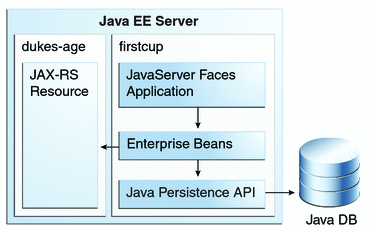

Architecture of the Example Applications
The example applications consist of four main components: DukesAgeResource, a JAX-RS RESTful web service; DukesBirthdayBean, an enterprise bean; FirstcupUser, a Java Persistence API entity; and firstcup, a web application created with JavaServer Faces Facelets technology.
Figure 3-1 Architecture of the First Cup Example Applications
DukesAgeResource is a JAX-RS resource that calculates the age of Duke, the Java mascot. Duke was born May 23, 1995, when the first demo of Java technology was publicly released.
DukesBirthdayBean is a local, no-interface view stateless session bean that calculates the difference between the user's age and Duke's age, and stores the user-submitted data in a Java Persistence API entity.
FirstcupUser is a Java Persistence API entity that represents a particular user's birthday. It is stored in a Java DB database table, and managed by DukesBirthdayBean's business methods.
The firstcup web application is a JavaServer Faces Facelets application that accesses DukesAgeResource to display Duke's age, reads in a date provided by the user, accesses DukesBirthdayBean to calculate who is older, and then displays the difference in years between the user and Duke and the average age difference of all users.
The firstcup web application consists of the following:
greeting.xhtml: An XHTML page that uses the JavaServer Faces Facelets tag libraries. Users can type their birth date in a field and submit it for comparison against Duke's birth date.
response.xhtml: A Facelets-enabled XHTML page that tells the user whether he or she is older or younger than Duke, based on the date the user entered in the greeting.xhtml page, and displays the average age difference of all users.
DukesBDay.java: A JavaServer Faces managed bean that defines properties to hold the user's birth date, get Duke's current age from the DukesAgeResource web service, and get the age difference between the user and Duke from the enterprise bean.
web.xml: The web application's deployment descriptor, which is used to configure certain aspects of a web application when it is installed. In this case, it is used to provide a mapping to the application's FacesServlet instance, which accepts incoming requests, passes them to the life cycle for processing, and initializes resources. It also specifies greeting.xhtml as the welcome file for the application.
WebMessages.properties and WebMessages_es.properties: Java programming language properties files that contain the localized strings used in greeting.xhtml and response.xhtml. By default, the English language strings in WebMessages.properties are used, but Spanish language strings are also provided in WebMessages_es.properties.
DukesBirthdayBean.java: as described above, the enterprise bean packaged within the firstcup application. DukesBirthdayBean calculates the difference between the user's birthday and Duke's birthday.
Tiers in the Example Applications
The example applications have one web tier component (the firstcup web client), three business tier components (the DukesAgeResource web service, the FirstcupUser entity, and the DukesBirthdayBean enterprise bean), and one enterprise information system (EIS) tier (the data in the Java DB database table). The user's web browser is the client tier component, as it accesses the rest of the application through the web tier.
Java EE Technologies Used in the Example Applications
The DukesAgeResource web service is a JAX-RS resource. The DukesBirthdayBean enterprise bean is a stateless session bean. The FirstcupUser entity is a Java Persistence API entity. The firstcup web client is a JavaServer Faces application that runs in the web container of the Java EE server.